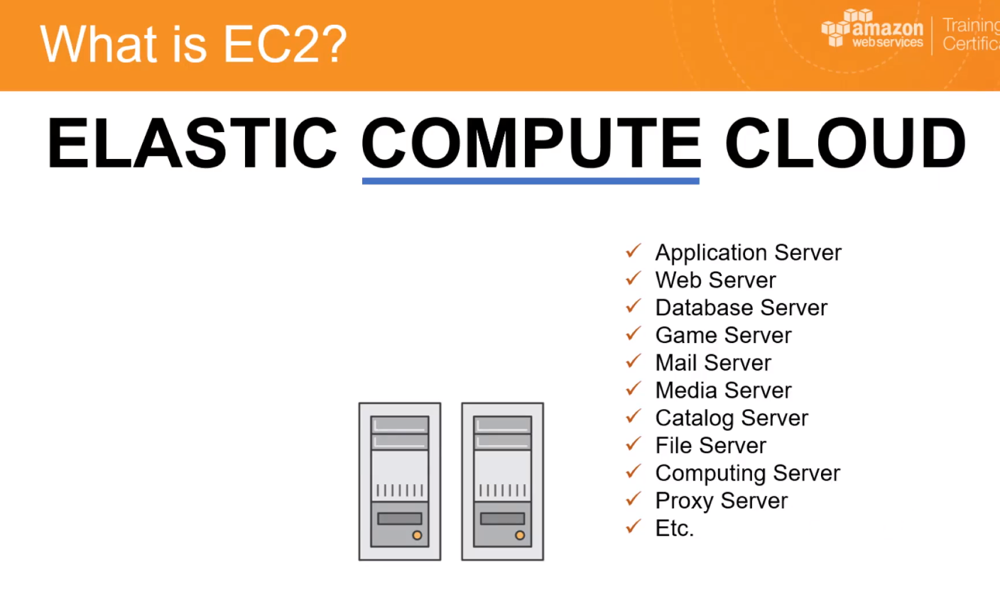
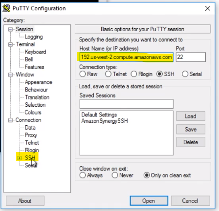
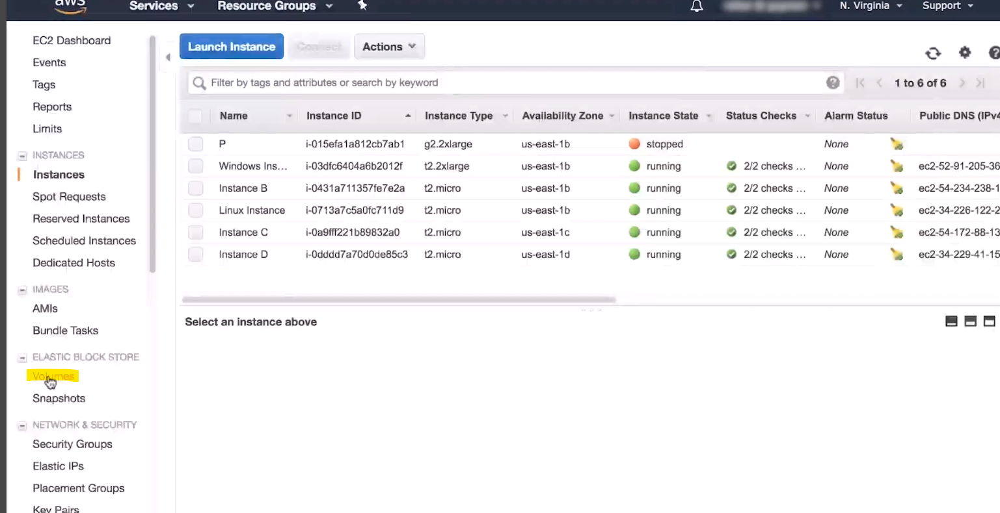
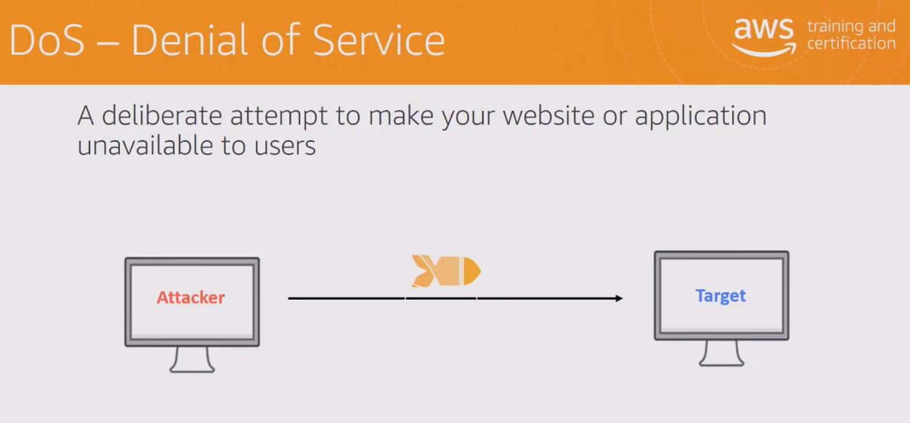
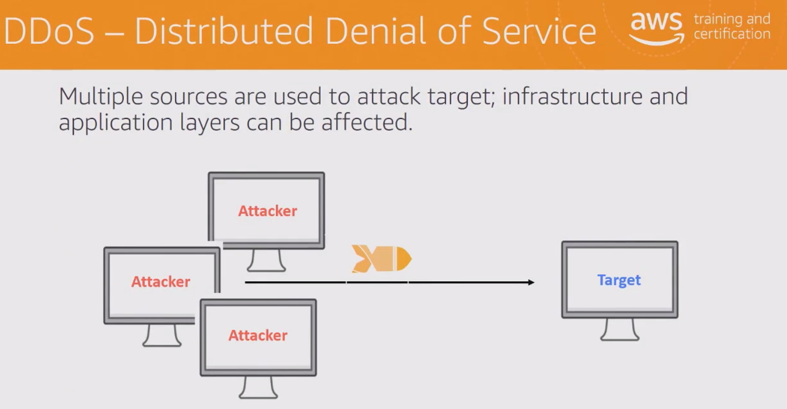

AWS Cloud Practitioner Essentials
Everything that runs between AWS resources runs and connects using a API
The fundamental-level course is intended for individuals who seek an overall understanding of the AWS Cloud, independent of specific technical roles. It provides a detailed overview of cloud concepts, AWS services, security, architecture, pricing, and support. This course also helps you prepare for the AWS Certified Cloud Practitioner exam.
The course outline
- Cloud Concepts Introduction
- AWS Core Services
- AWS Enhanced Services
- AWS Architecting
- Security
- Markup lanuage provides meaning to text in a document
- Pricing and Support
Introduction to the AWS Cloud
Cloud computing is the on-demand availability of computer system resources, especially data storage and computing power, without direct active management by the user. The term is generally used to describe data centers available to many users over the Internet.
- Before cloud computing we had data centers with infrastrucures that were over or under speced with no room of real flexibility.
- Cloud computing enables us to use the required computing power from a data center that is scalable
- These cloud resources are temporary and disposable if needed and can be created or powered up in seconds
- Providing a more agile approach to IT infrastructure
- Allowing businesses to react elastically and quickly to changing requirements or conditions
- Agility is provided through increased speed, ease of experementation and pushing people to innovate
- AWS is all over the world giving you a global reach in seconds
- Very good for demo or test environments giving you the ability to create or changer server in seconds
- Template based environment making it quick and easy to create servers or environments
- Cloud Elasticity. Elasticity is the ability to grow or shrink infrastructure resources dynamically as needed to adapt to workload changes in an autonomic manner, maximizing the use of resources.
- Amazon Web Services provides services and infrastructure to build reliable, fault-tolerant, and highly available systems in the cloud.
- Fault-tolerance defines the ability for a system to remain in operation even if some of the components used to build the system fail.
- The customer choses the location of the data and what level/type of encryption and were the necryption keys are kept.
- Your security policy can be built into your infrastructure from the get go
AWS Interfaces
- There are three ways to access AWS, Managment console, AWS CLI Command Line Interface and SDK's software Development Kits
- An SDK is a collection of software used for developing applications for a specific device or operating system. Examples of SDKs include the Windows 7 SDK, the Mac OS X SDK, and the iPhone SDK
- All the above three are built on a common interface/api that serves as the foundation for AWS

- AWS Managment Console can be seen through the browser or the AWS APP
AWS Core Services
This module provide high level information about several AWS Cloud services, including Amazon Elastic Cloud Compute (EC2), Amazon Elastic Block Store (EBS), Amazon Simple Storage Service (S3), the AWS Global Infrastructure, Amazon Virtual Private Cloud (VPC), and Security Groups.
AWS Elastic Cloud Compute EC2
- Amazon Elastic Compute Cloud (Amazon EC2) is a web service that provides secure, resizable compute capacity in the cloud. It is designed to make web-scale cloud computing easier for developers.
- 
- All resources are hosted in the cloud
- Elastic means if properly configured you can increase or decrease the resources required

- Steps to building a EC2 Instance
- Start of by chosing the region of were you want the instance to be hosted
- When starting out creating a EC2 instance you are required to chose a software layer to the instance, a AMI Amazon Machine Image. You can chose from the normal Windows or Linux or even chose a third party platform from the amazon market place
- Next you can chose the hardware selection called Instance Types, vCPUs, RAM, Sotrage and so on. You will find the lowest spec will be free for a year
- Next you configure the network and you would normally stick with the default.
- Next you add storage and the type of storage which is normally SSD
- At this point you can also add a tag. An example of a tag would be key = NAME value = Webserver. Tagging is helpful as you grow your infrastructure on AWS. Tags are fundementally meta data asaist a instance which can be shared across other instances. Key can be names, department, project, cost centre and so on
- Time to configure a security group, these are a set of firewalls rules in firewalls. You can add a rule for HTTP which is going to give your instance web connectivty.
- You are now done and can now launch the instance
- To connect to this instance using SSH you will need the private key file which is called a key pair. You will always want to create a new key pair when starting out with a new instance. You will than download the private key. Keep this safe as it is essential when connecting using connecting over SSH
- It will take sometime to get running. In the admin console once the state is running you can than login
- To connect to the instance you will see detials against the instance in the console. Yo uwill need the public DNS and Public IP

- You will need to download puTTY. The puTTY application is used to create a secure connection using SSH
- Host Name is ec2-user@PUBLIC DNS. The public DNS can be found against the instance in the management console.
- Next click ssh in the left hand menu in putty and select auth. Were Private key file authentication is located click browse and select the downloaded key pair created.
 - Putty on Windows requires a PPK file so we will have to use the Putty Gen tool. The tool creates the required ppk files

- With this new ppk file you should be able to log into the server you have created.
AWS Elastic Block Store EBS
- Amazon Elastic Block Store (EBS) is an easy to use, high performance block storage service designed for use with Amazon Elastic Compute Cloud (EC2) for both throughput and transaction intensive workloads at any scale.


- Hard Drisk or SSD disk and pay as you use
- High availability replicated across multiple servers in the area zone
- You can also create point in time snapshots of your volumes. You can use snapshots to create new machines in your current or other region zones
- Encryption occurs on the EC2 side and this is free.
- To create a volume you simply perform the follwing:
- In the AWS management console you navigate to EC2 and this is were you will find on the left under Elastic Block Store volumes
 - If I want to attach a EBS volume to my EC2 instance the volume has to be created in the same Avalibilty Zone
- Create a volume and start by chosing the correct availability zone
- Select the required volume type SSD being the prefered but magnetic being the cheapest
- Select the size of the volume you would like to create
- Under snapshot ID you can restore a snapshot to a volume.
- Once the volume is created you will be given a Volume ID, take note of this ID

- To attach the volume to a EC2 instance you do this against the volume under actions


- You should now be able to log into the ec2 instance and check volumes and see the new attached volume.
- In the AWS management console you navigate to EC2 and this is were you will find on the left under Elastic Block Store volumes
- You can detach a volume from a ec2 instance and attach it to another ec2 instance
- Also remember to apply a tag to your volume.
AWS Simple Storage Service S3
- A good intro video to amazon s3 AWS S3
- AWS S3 stands for Simple Sotrage Services
- Data stored in a s3 bucket isnt associated to any perticular server and doesnt have to be managed
- Can hold any object type, even large database backups.
- By default data is not shown publicly

- In S3 you create a bucket that will hold your data. When placing a item in a bucket you will need a key, something we use later to get the item back later.

- Place the bucket in the same region as you are for a quicker response time when using API's
- You are only billed for what you use
- Access can be done to the S3 bucket from the below:

- You can access items in the bucket through a rest end point, for this to work you have to ensure that the bucket is made avalible to the public. For this to work the object names have to be globally unique and DNS complient.

- Common use cases for a S3 bucket would be as below:

- How to create a S3 bucket see guide HERE
AWS Global Infrastructure
- AWS maintains multiple geographic Regions, including Regions in North America, South America, Europe, China, Asia Pacific, South Africa, and the Middle East.
- Regions host two or more Avalibilty zones.
- When picking the region that will determine were yuor resources are located.
- When picking a region be sure to consider latency, cost and regulatory requirements.
- Your resources can be deployed over mutiple regions to better suit your needs
- Resources in one region dont automitaclly replicate or communicate to other resources in other regions
- Avalibilty Zones are data centre located in one region. These are physically isolated but connected by a fast low latency network
- Avalibilty Zones are a physically distint independent infrastructure, they are physically and logically seperate.
- A Edge location is datacenter owned by a trusted partner of AWS which has a direct connection to the AWS network
- These Edge locations are used to serve requests from services like Cloud Front and Route 53
AWS Virtual Private Cloud
- Amazon Virtual Private Cloud (Amazon VPC) lets you provision a logically isolated section of the AWS Cloud where you can launch AWS resources in a virtual network that you define.


AWS Security Groups


- In the image above you will see that the web tier is the only group that accepts traffic from the web. The app tier only accepts traffic from the Web Tier and so on. You will see that there is a SSH/RDP connection allowed from coporate to connect to any tier.
- To make a security group start of with navigating to the ec2 location in the admin center

- When creating a new security group by default all inbound traffic is denied and all outbound traffic is allowed

AWS Integrated Services
This module focuses on some of the integrated services that are part of the AWS Cloud, including Application Load Balancer, Auto Scaling, Amazon Route 53, Amazon Relational Database Services (RDS), AWS Lambda, AWS Elastic Beanstalk, Amazon Simple Notification Service (SNS), Amazon CloudWatch, Amazon CloudFront, and AWS CloudFormation.
Application Load Balancer
- SOme info on a Application Load Balancer

- A load balancer serves as the single point of contact for clients. The load balancer distributes incoming application traffic across multiple targets, such as EC2 instances, in multiple Availability Zones. This increases the availability of your application. You add one or more listeners to your load balancer.

- Adds a few more features to the classic load balancer


- Another use case to see. We have rules against listners looking out for conditions you have set to route the traffic to the right target group


- A added feature is path based routing were you can route the traffic of a user that has come to a particular url, driving the traffic exactly were you would like it
- A good guide to Setup a application load balancer AWS - ALB
- To build a application load balancer you will navigate to the ec2 screen in the admin portal and go to load balancer. Here you can create either a classic load balancer or a application load balancer.
- Once you have created the load balancer ensure to create the target group. Ensure to register the instance for that target group
Auto Scaling
- AWS Auto Scaling monitors your applications and automatically adjusts capacity to maintain steady, predictable performance at the lowest possible cost. Using AWS Auto Scaling, it’s easy to setup application scaling for multiple resources across multiple services in minutes.

- No need to guess how much resource you need
- Important to use Cloud Watch to assist with feedback on how much resource you actually need. Cloud Watch will not automatically apply the required resource you will need auto scaling for this

- Below is it shown that we have a peek in resource usage in the middle of the week. Instead of being under resourced or over resourced Auto Scaling provides the extra resource as and when required.
- Auto Scaling is not only providing the adequate resource its also providing that resource on on-demand
- You can set rules and paramters to when to scale up or down. This could be a CPU percentage or another condition.


- Dynamic auto scaling can be achieved through creating cloud watch alarms which can trigger the auto scaling


- A tutorial for Auto Scaling
- Again Auto Scaling can be found under the ec2 area in the management console.
- Start with creating a auto scaling group

AWS Route 53
- Amazon Route 53 is a highly available and scalable cloud Domain Name System (DNS) web service. It is designed to give developers and businesses an extremely reliable and cost effective way to route end users to Internet applications by translating names like www.example.com into the numeric IP addresses like 192.0.2.1 that computers use to connect to each other. Amazon Route 53 is fully compliant with IPv6 as well.


- To start using route 53 you have to create a Hosted Zone
- After creating the hosted zone you will be provided with name servers that can be used for that domain


AWS Relational Database Services
- Amazon Relational Database Service (Amazon RDS) makes it easy to set up, operate, and scale a relational database in the cloud. It provides cost-efficient and resizable capacity while automating time-consuming administration tasks such as hardware provisioning, database setup, patching and backups. It frees you to focus on your applications so you can give them the fast performance, high availability, security and compatibility they need.


- A AWS RDS is normally isolated in a private subnet and is only made accessable to indicated applications
- When selecting a subnet for your RDS you are also selecting the Avalibilty zone for that data base
- Amazon created another standby instance of the RDS in another availability zone syncronising the data automitaclly from the RDS DB instance to the standby instance.


AWS Lambda
- AWS Lambda lets you run code without provisioning or managing servers. You pay only for the compute time you consume.
With Lambda, you can run code for virtually any type of application or backend service - all with zero administration. Just upload your code and Lambda takes care of everything required to run and scale your code with high availability. You can set up your code to automatically trigger from other AWS services or call it directly from any web or mobile app. 


- You can create cloud watch events to trigger your Lambda code

- Use cases for AWS Lambda are, automating backups, processing objects uploaded to s3, event driven log analysis, Event Driven transformations, IOT, Operating serverless websites


AWS Elastic Beanstalk
- AWS Elastic Beanstalk is an easy-to-use service for deploying and scaling web applications and services developed with Java, .NET, PHP, Node.js, Python, Ruby, Go, and Docker on familiar servers such as Apache, Nginx, Passenger, and IIS.
You can simply upload your code and Elastic Beanstalk automatically handles the deployment, from capacity provisioning, load balancing, auto-scaling to application health monitoring. At the same time, you retain full control over the AWS resources powering your application and can access the underlying resources at any time. 


AWS SNS Simple Notification Service
- Amazon Simple Notification Service (SNS) is a highly available, durable, secure, fully managed pub/sub messaging service that enables you to decouple microservices, distributed systems, and serverless applications. Amazon SNS provides topics for high-throughput, push-based, many-to-many messaging. Using Amazon SNS topics, your publisher systems can fan out messages to a large number of subscriber endpoints for parallel processing, including Amazon SQS queues, AWS Lambda functions, and HTTP/S webhooks. Additionally, SNS can be used to fan out notifications to end users using mobile push, SMS, and email.


AWS CloudWatch
- Amazon CloudWatch is a monitoring and observability service built for DevOps engineers, developers, site reliability engineers (SREs), and IT managers. CloudWatch provides you with data and actionable insights to monitor your applications, respond to system-wide performance changes, optimize resource utilization, and get a unified view of operational health. CloudWatch collects monitoring and operational data in the form of logs, metrics, and events, providing you with a unified view of AWS resources, applications, and services that run on AWS and on-premises servers. You can use CloudWatch to detect anomalous behavior in your environments, set alarms, visualize logs and metrics side by side, take automated actions, troubleshoot issues, and discover insights to keep your applications running smoothly.


AWS CloudFront
- Amazon CloudFront is a fast content delivery network (CDN) service that securely delivers data, videos, applications, and APIs to customers globally with low latency, high transfer speeds, all within a developer-friendly environment. CloudFront is integrated with AWS – both physical locations that are directly connected to the AWS global infrastructure, as well as other AWS services. CloudFront works seamlessly with services including AWS Shield for DDoS mitigation, Amazon S3, Elastic Load Balancing or Amazon EC2 as origins for your applications, and Lambda@Edge to run custom code closer to customers’ users and to customize the user experience. Lastly, if you use AWS origins such as Amazon S3, Amazon EC2 or Elastic Load Balancing, you don’t pay for any data transferred between these services and CloudFront.
- To deliver content to end users with lower latency, Amazon CloudFront uses a global network of 216 Points of Presence (205 Edge Locations and 11 Regional Edge Caches) in 84 cities across 42 countries. Amazon CloudFront Edge locations are located in:

- Edge locations serve requests for CloudFront and Route 53. CloudFront is a content delivery network, while Route 53 is a DNS service. Requests going to either one of these services will be routed to the nearest edge location automatically. This allows for low latency no matter where the end user is located. I hope this answer gives you a better perspective.
- Example If your based in india and your customers are in the UK you can use Cloud Front to cache the web content providing faster response time to your customers.


- An Advantage for CloudFront is not just faster response times for your customer but also if the web server was to go down the cached version of the site will continue to show for your customers
AWS CloudFormation
- AWS CloudFormation provides a common language for you to model and provision AWS and third party application resources in your cloud environment. AWS CloudFormation allows you to use programming languages or a simple text file to model and provision, in an automated and secure manner, all the resources needed for your applications across all regions and accounts. This gives you a single source of truth for your AWS and third party resources.


- AWS CloudFormation is best placed for autimation of creating infrastructures as it has a great reach into many AWS Services
- No infrastructure to support

- A template file is instructions on what resources you would like to provision. CloudFOrmation constructs the resources listed in the template.


- When you delete a stack all the resources of a stack at deleted

- You dont have to list your resources in the exact order of creation in your template


- The two critical requirements to run CloudFOrmation are templates and permissions. The person calling the templates must have permissions to all services referrenced in the template
- You can use CloudFormation designer to get started

- Summary - AWS CloudFormation is a fully managed services that acts as a engine to autimate the provisioning of AWS resources. This is done through a use with the adequate permissions for all resources being provisioned and this is done through a template. These provisioned resources are known as the stack.
AWS Architecture
This module focuses on architectural considerations for deploying or migrating to the AWS Cloud. The module covers the fundamentals of a well architected solution, discusses fault tolerance and availability, and wraps up with a section on web hosting on the AWS Cloud.
The AWS Well-Architected Framework

- AWS use 5 Pillars as a guide on architecture


Fault Tolerance and High Availability


AWS Web Hosting
- Amazon Web Services offers cloud web hosting solutions that provide businesses, non-profits, and governmental organizations with low-cost ways to deliver their websites and web applications. Whether you’re looking for a marketing, rich-media, or ecommerce website, AWS offers a wide-range of website hosting options, and we’ll help you select the one that is right for you.
AWS Security

- Infrastructure such as Data Centers are built for the most security sensative customers, all other customer benifit from this setup by default


The Shared Responsibility Model
- Both the user and AWS is responsible for ensuring Security in your Stack
- Security and Compliance is a shared responsibility between AWS and the customer. This shared model can help relieve the customer’s operational burden as AWS operates, manages and controls the components from the host operating system and virtualization layer down to the physical security of the facilities in which the service operates.

- AWS has external Third Party auditors that can confirm the security implimentations for the AWS infrastructure, see AWS Compliance
- AWS cant see anything above the Hypervisor level

Identity and Access management
- AWS Identity and Access Management (IAM) enables you to manage access to AWS services and resources securely. Using IAM, you can create and manage AWS users and groups, and use permissions to allow and deny their access to AWS resources. IAM is a feature of your AWS account offered at no additional charge.
- Here in IAM a user is a perminant named operator, could be human or computer
- A group is a collection of users.
- A role is not your permissions, it is a authentication method. A role is a operator.
- The policy document is a JSON document, It can be attached to either a user, Group or Role.
- Example of something in the polciy document is put something in S3 bucket. This will allow a particular to interact with the s3 bucket resource in the stack/VPC
- In a policy doc you can place rules like, Prevent actions like EC2 stop and EC2 terminate in a production environment.
- The policy doc is essential authorisation for users to perform thier actions.
Amazon Inspector
- Amazon Inspector is an automated security assessment service that helps improve the security and compliance of applications deployed on AWS. Amazon Inspector automatically assesses applications for exposure, vulnerabilities, and deviations from best practices. After performing an assessment, Amazon Inspector produces a detailed list of security findings prioritized by level of severity. These findings can be reviewed directly or as part of detailed assessment reports which are available via the Amazon Inspector console or API.


- This is agent based and API driven


AWS Shield

- AWS Shield is a managed Distributed Denial of Service (DDoS) protection service that safeguards applications running on AWS. AWS Shield provides always-on detection and automatic inline mitigations that minimize application downtime and latency, so there is no need to engage AWS Support to benefit from DDoS protection. There are two tiers of AWS Shield - Standard and Advanced.
- 
- 


- All AWS customers benefit from the automatic protections of AWS Shield Standard, at no additional charge. AWS Shield Standard defends against most common, frequently occurring network and transport layer DDoS attacks that target your web site or applications. When you use AWS Shield Standard with Amazon CloudFront and Amazon Route 53, you receive comprehensive availability protection against all known infrastructure (Layer 3 and 4) attacks.
- For higher levels of protection against attacks targeting your applications running on Amazon Elastic Compute Cloud (EC2), Elastic Load Balancing (ELB), Amazon CloudFront, AWS Global Accelerator and Amazon Route 53 resources, you can subscribe to AWS Shield Advanced. In addition to the network and transport layer protections that come with Standard, AWS Shield Advanced provides additional detection and mitigation against large and sophisticated DDoS attacks, near real-time visibility into attacks, and integration with AWS WAF, a web application firewall. AWS Shield Advanced also gives you 24x7 access to the AWS DDoS Response Team (DRT) and protection against DDoS related spikes in your Amazon Elastic Compute Cloud (EC2), Elastic Load Balancing (ELB), Amazon CloudFront, AWS Global Accelerator and Amazon Route 53 charges.